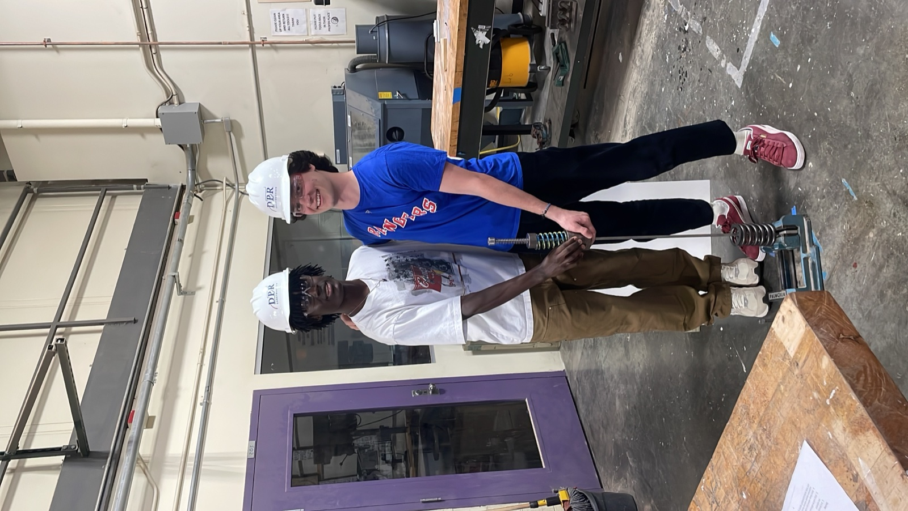
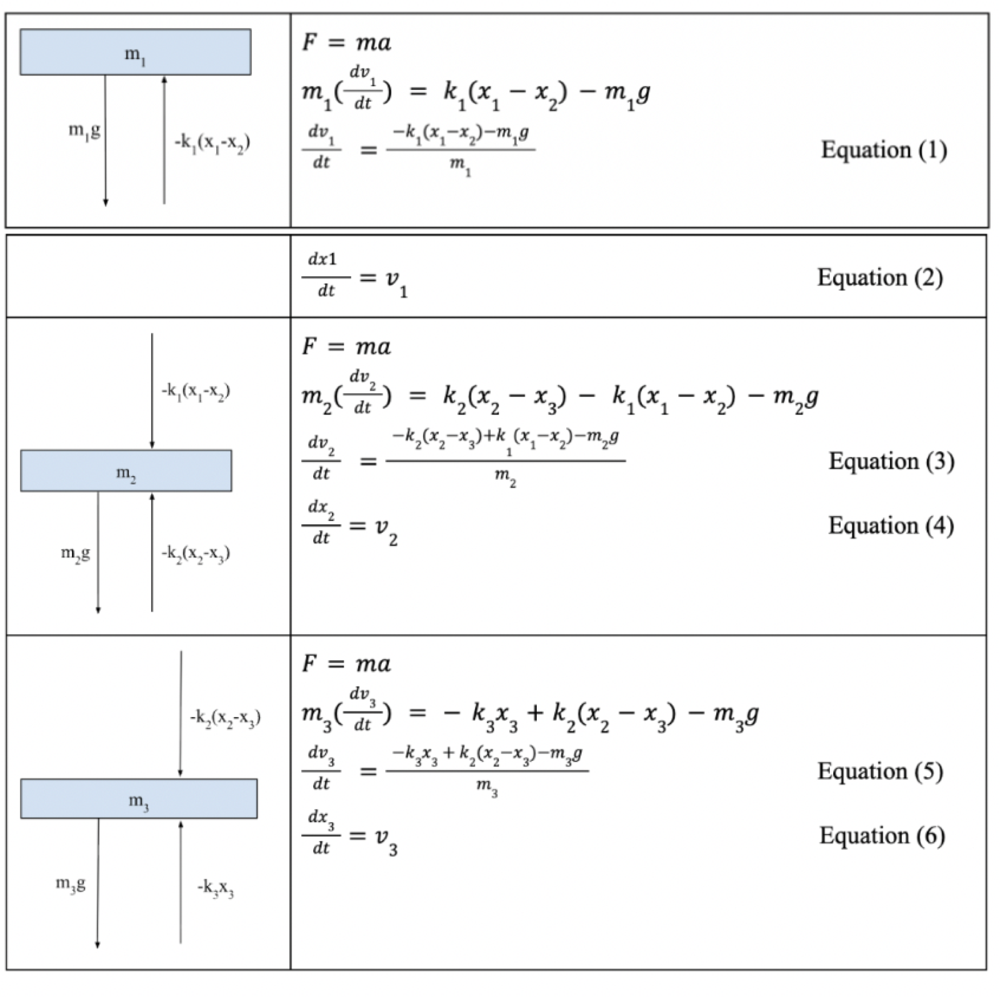
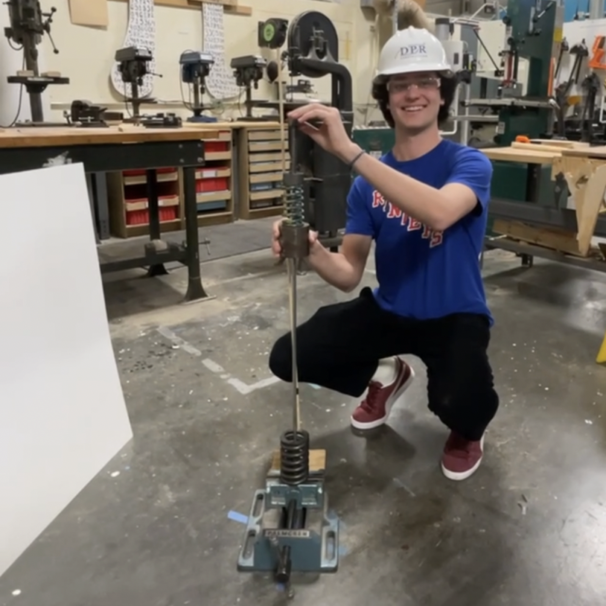
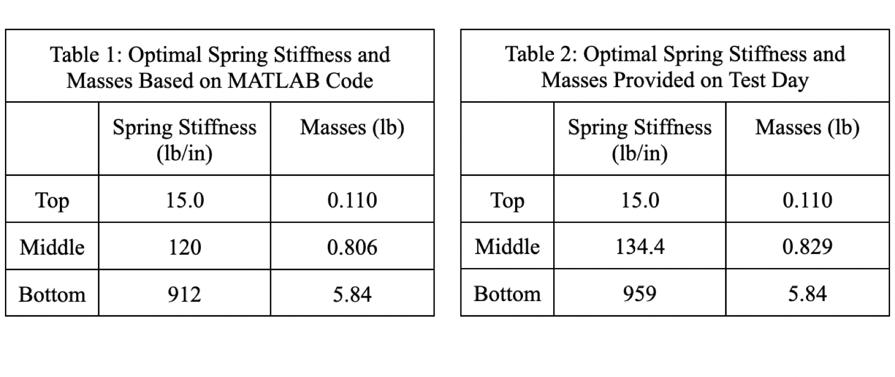

Mass Projectile Launcher
Worked in a group of two to use MATLAB to optimize a three-mass, three-spring projectile launcher.
Our goal was to design and optimize a three-mass, three-spring projectile launcher by calculating the ideal masses and spring constants to achieve the greatest launch velocity. Using MATLAB simulations, we determined that the ideal mass configuration was 0.110 lb at the top, 0.806 lb in the middle, and 5.84 lb at the bottom. Additionally, the optimal spring constants were 15.0 lb/in for the top spring, 120 lb/in for the middle spring, and 912 lb/in for the bottom spring.
Based on these results, we assembled and tested a launcher using available materials that most closely matched the calculated values. Finally, we implemented image processing code in combination with a high-speed camera to measure the projectile's velocity, which was found to be 40.7 ft/s.



